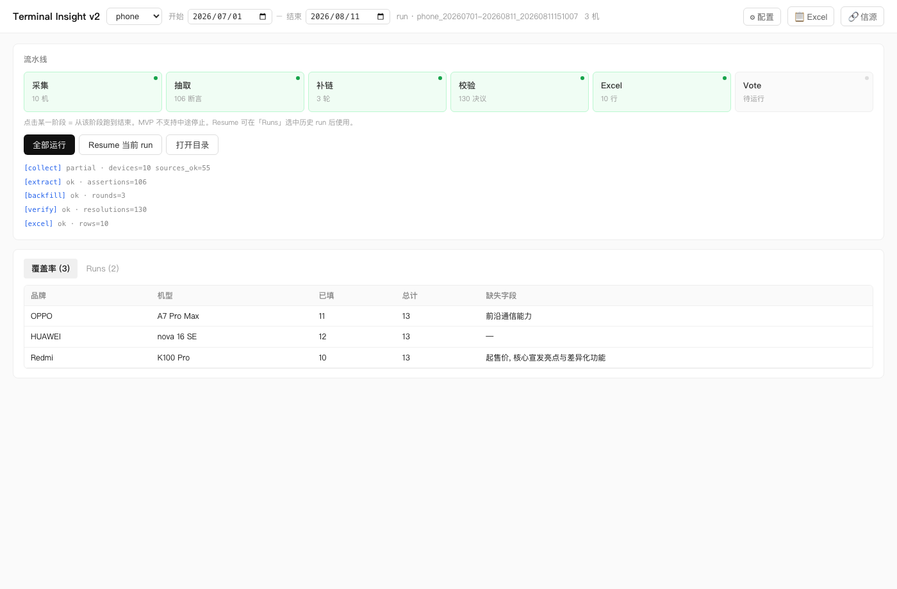
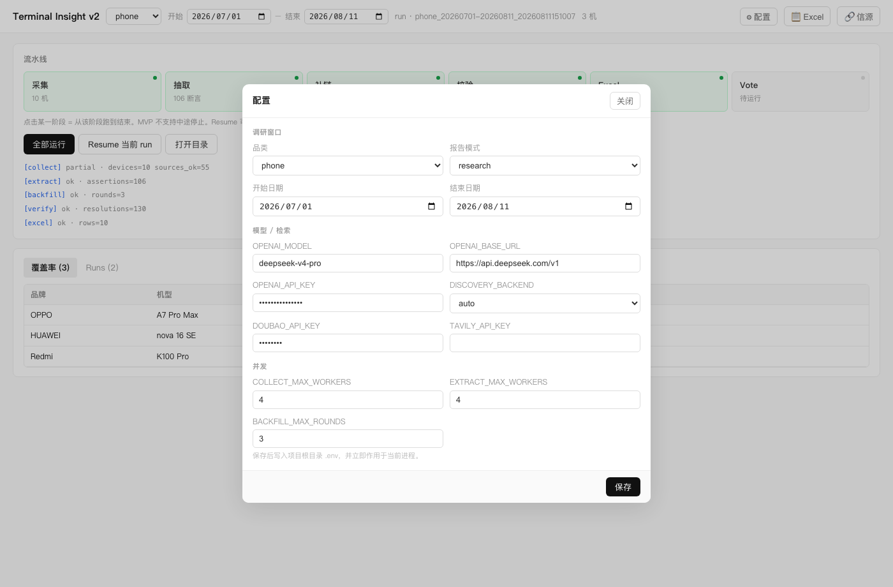
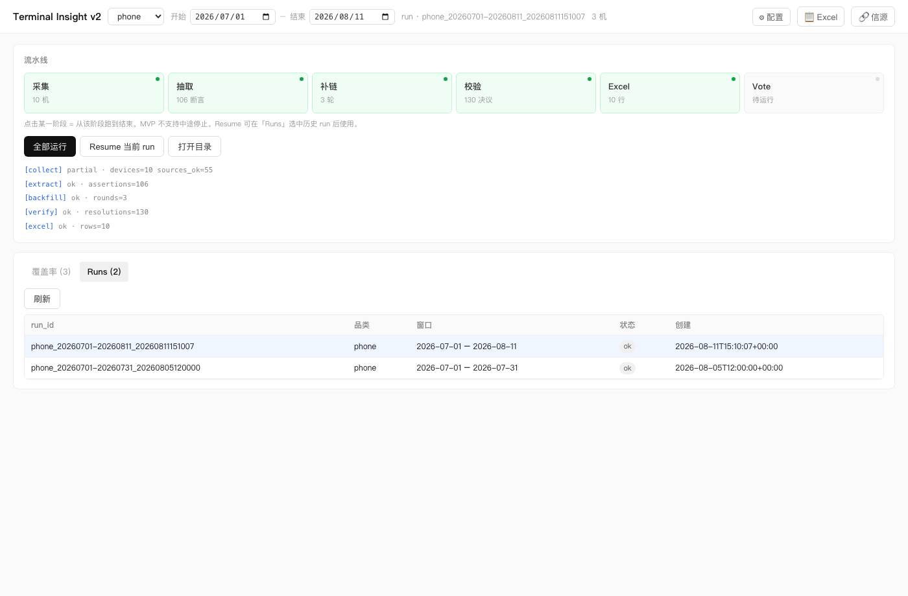

适用对象：业务操作 / 实施交付
适用形态：桌面 GUI（python run_gui.py或打包后的terminal-insight-v2.exe）
截图版本：浅色主题（当前 main 默认界面）深色主题手册见：GUI用户使用手册-深色版.md / PDF
关联文档：客户交接说明.md · PACKAGING.md
Terminal Insight v2 GUI 用于在本机完成智能终端（手机 / 手表 / 眼镜）调研流水线：
采集 → 抽取 → 补链 → 校验 → Excel → Vote你可以用图形界面完成：配置密钥与日期、选择窗口发现或定向机型、一键跑批、查看覆盖率、打开 Excel / 信源页、切换历史 Run。
| 方式 | 命令 / 操作 |
|---|---|
| 源码 | 在项目根目录执行 python run_gui.py（或 python -m terminal_insight_v2.gui） |
| 打包版（Windows） | 双击 terminal-insight-v2.exe（需保留整个文件夹，勿只拷贝 exe） |
首次启动前准备
.env 与 data/）启动后进入主界面，大致分为四块：顶栏、流水线、日志、覆盖率 / Runs。

| 区域 | 作用 |
|---|---|
| ① 顶栏 | 品类、日期窗口、采集方式（窗口发现 / 定向机型）、当前 run、配置 / Excel / 信源入口 |
| ② 流水线卡片 | 六个阶段状态；点击某阶段 = 从该阶段跑到结束 |
| ③ 操作按钮与日志 | 全部运行 / Resume / 打开目录；下方为阶段摘要日志 |
| ④ 覆盖率 / Runs | 查看字段覆盖情况，或切换历史批次 |
阶段状态颜色
| 状态 | 含义（浅色主题） |
|---|---|
| 灰点 · 待运行 | 卡片浅灰，尚未执行 |
| 蓝点闪烁 · 运行中 | 卡片淡蓝，当前正在跑 |
| 绿点 · 完成 | 卡片淡绿；ok / skipped / partial 都算完成（采集常显示「N 机」） |
| 红点 · 失败 | 卡片淡红，本阶段出错 |
.env，立即生效）
| 项 | 说明 |
|---|---|
| 品类 | phone / watch / glasses（对应 category_templates/*.xlsx） |
| 报告模式 | research（研究）或 gold（更严格留空） |
| 开始 / 结束日期 | 发布日期窗口，含起止日 |
| 配置项 | 写入 .env | 用途 |
|---|---|---|
| OPENAI_MODEL | OPENAI_MODEL | 抽取用模型，默认 deepseek-v4-pro |
| OPENAI_BASE_URL | OPENAI_BASE_URL | 默认 https://api.deepseek.com/v1 |
| OPENAI_API_KEY | OPENAI_API_KEY | DeepSeek（OpenAI 兼容）密钥 |
| DISCOVERY_BACKEND | DISCOVERY_BACKEND | auto / doubao / tavily |
| DOUBAO_API_KEY | DOUBAO_API_KEY | 豆包搜索（发现机型 / 补链） |
| TAVILY_API_KEY | TAVILY_API_KEY | Tavily 搜索（可选备用） |
auto：优先豆包，不可用时尝试 Tavily。密钥只显示为密文；保存后不会整文件覆盖 .env 中其他未展示键。| 项 | 建议 |
|---|---|
| COLLECT_MAX_WORKERS | 默认 4；过大易触发限流 |
| EXTRACT_MAX_WORKERS | 默认 4 |
| BACKFILL_MAX_ROUNDS | 默认 3（补链轮次上限） |
顶栏的品类与日期修改后也会自动快速保存到 .env。
在顶栏选择：
phone）2026-07-01 ~ 2026-08-16）日期窗口在两种采集方式下都有效：窗口发现用它找新机；定向机型用它规划信源与过滤发布时间。
顶栏下拉可切换：
| 方式 | 做什么 | 何时用 |
|---|---|---|
| 窗口发现（默认） | 按日期窗搜索本窗口新机，再抓取官网 / 商城 / 第三方 | 普查某段时间的新品 |
| 定向机型 | 跳过发现，只抓你确认的「品牌 + 型号」 | 已知清单、复跑指定几款 |
定向机型操作
华为 | Mate X7
OPPO, A7 Pro Max
Redmi Note 17 Pro分隔符支持竖线 |、逗号、Tab 或空格。规则：
targets.json，不写入 .env未确认清单时点「全部运行」，会提示「定向机型为空」并打开该面板。
点击蓝色按钮 全部运行。
系统将按顺序执行：collect → extract → backfill → verify → excel → vote。 vote 按六套参考系各提名 2–3 个热点，写入 votes.json，并回填 Excel「亮点投票」。
六套取景框名称：路线标尺 / 巧思定义 / 价位规格 / 选题展开 / 证据定位 / 痛点购机。
任务一开始就会绑定本次 run id（不必等整条流水线结束）。之后：
partial 也算完成，采集常显示「3 机」）[collect] partial · devices=3 sources_ok=24
[extract] ok · assertions=66
…注意：当前版本不支持中途停止。请勿强制结束进程，以免 run 半成品。整批可能需数十分钟。关掉 GUI 窗口会中断本次跑批。
跑完后可用顶栏 📋 Excel / 🔗 信源 或 打开目录 查看产物（详见下一节）。「亮点投票」在 Vote 完成后写入同一份 xlsx。
采集完成后即可看信源；跑到 excel 阶段后才有参数表。入口都在主界面右上角与流水线区按钮。
前提：当前 run 已成功跑完 excel 阶段（阶段卡片为绿色「完成」，且显示行数）。
操作（任选其一）
- 系统用系统默认程序打开（Windows 一般为 Excel / WPS，macOS 为 Numbers 或 Excel）
*.xlsx按钮为灰色时：说明当前 run 还没有 Excel 产物 → 先跑到 excel，或在 Runs 里切换到已完成的批次。
Excel 里通常有哪些 Sheet
| Sheet（常见） | 内容 |
|---|---|
| 参数主表（品类名） | 品牌、机型、发布时间与各规格字段 |
| 字段信源 | 每个字段对应的展示值、策略、来源 URL |
| 冲突与校验 | 校验/冲突问题，便于人审 |
| 亮点投票 | Vote 结果：参考系、取景框、热点、品牌、机型、说明 |
文件路径示例：
data/runs/phone_20260701-20260811_20260811151007/phone_20260701-20260811.xlsx前提：当前 run 已完成 collect（或至少已写出 sources.html）。
操作（任选其一）
sources.html（也可能是 sources_10phone.html 这类带数量的文件名）信源页用来干什么
路径示例：
data/runs/phone_20260701-20260811_20260811151007/sources.html点击 打开目录，可看到本次 run 的全部文件：
data/runs/{category}_{start}-{end}_{时间戳}/
sources.html ← 信源页
*.xlsx ← 参数 Excel（含「亮点投票」）
targets.json ← 定向机型清单（仅定向模式）
votes.json ← 六参考系投票原文
coverage_report.json ← 覆盖率（GUI 表格同源）
steps.json ← 各阶段状态与指标
collection_manifest.json
assertions.jsonl
…| 想看什么 | 点哪里 | 何时可用 |
|---|---|---|
| 参数 Excel / 亮点投票 | 顶栏 📋 Excel | excel 完成；投票 Sheet 需再跑完 vote |
| 机型与链接 | 顶栏 🔗 信源 | collect 完成 |
| 全部文件 | 打开目录 | 已有当前 run |
| 历史某次的表/信源 | Runs 点选该行 → 再点 Excel / 信源 | 该 run 已有对应产物 |
在流水线卡片上点击某一阶段（如「抽取」）= 从该阶段一直跑到结束。
典型场景：
resolved.json）运行中不可再点阶段（卡片呈禁用态）。
主界面下方切换到 覆盖率 Tab，查看每机已填字段与缺失字段。
| 列 | 含义 |
|---|---|
| 品牌 / 机型 | 设备身份 |
| 已填 / 总计 | 字段填充进度 |
| 缺失字段 | 尚未决议或为空的字段名 |
覆盖率在跑完 verify 后才有完整数据。可据此决定是否 Resume 或调整日期后重跑。
切换到 Runs Tab，可浏览近期批次并点选切换当前 run。

| 操作 | 说明 |
|---|---|
| 点击某行 | 切换当前 run，刷新覆盖率与产物按钮（含 Excel / 信源） |
| 刷新 | 重新拉取 run 列表 |
| Resume 当前 run | 在已选中的 run 上继续跑（适合中断后续阶段） |
列表字段：run_id、品类、日期窗口、状态、创建时间。
（流程图见 Markdown 原文；PDF 导出已省略 Mermaid 渲染）
sources.html 机型无串号REPORT_MODE（research / gold）语义差异| 现象 | 处理 |
|---|---|
| 双击无窗口（Windows） | 安装 WebView2；检查杀软；换短路径目录 |
| 配置保存无效 | 目录无写权限 → 移到「文档」等可写位置 |
| 采集为空 | 窗口发现：检查 DOUBAO_API_KEY / TAVILY_API_KEY 与网络。定向：先确认清单，再看抓取是否失败 |
| 提示「定向机型为空」 | 先解析预览并点 确认；下拉须为「定向机型」 |
| 定向仍出现未点名的机型 | 确认顶栏是定向且已确认清单；补链不会新增机型，只会给已有机补字段 |
| 阶段卡片一直「待运行」 | 需本版本（进度修复后）；旧版要等整批结束才翻牌。重启 GUI 再跑 |
| 抽取大量空 | 检查 OPENAI_API_KEY、OPENAI_BASE_URL、模型名 |
| Excel 按钮灰色 | 尚未跑到 excel，或未选中有产物的 run → 见 §6 |
| 信源按钮灰色 | 尚未完成 collect，或 Runs 未选中有 sources.html 的批次 |
| 点了 Excel / 信源没反应 | 检查系统是否关联了 xlsx / 浏览器；也可「打开目录」手动双击 |
| 想停掉任务 | 当前不支持优雅停止；只能等跑完（勿频繁强杀）。关窗口会中断 |
| Vote 失败 / 无票 | 需已有 resolved.json（先跑 verify）且配置了 OPENAI_API_KEY |
GUI「全部运行」约等于：
python -m terminal_insight_v2.cli run \
--category phone \
--start 2026-07-01 \
--end 2026-08-16 \
--stages collect,extract,backfill,verify,excel,voteCLI 目前只走窗口发现。定向机型请用 GUI（顶栏切换后确认清单）。
更细的环境与部署说明见 客户交接说明.md。
| 控件 | 位置 | 一句话 |
|---|---|---|
| 品类下拉 | 顶栏 | 切换 phone/watch/glasses |
| 日期 | 顶栏 | 调研发布窗口 |
| 窗口发现 / 定向机型 | 顶栏 | 普查新机，或只抓已确认清单 |
| 定向 · N 机 | 顶栏（定向时） | 粘贴、解析、确认品牌+型号 |
| ⚙ 配置 | 顶栏右 | 密钥与并发 |
| 📋 Excel | 顶栏右 | 打开参数表（见 §6.1） |
| 🔗 信源 | 顶栏右 | 打开 sources.html（见 §6.2） |
| 阶段卡片 | 流水线区 | 从该阶段跑到结束 |
| 全部运行 | 流水线区 | 新开一轮全流程 |
| Resume | 流水线区 | 续跑当前 run |
| 打开目录 | 流水线区 | 打开 run 文件夹（可手动找 xlsx / html） |
| 覆盖率 | 下方 Tab | 缺字段一览 |
| Runs | 下方 Tab | 历史批次切换后再打开 Excel / 信源 |
*文档截图为浅色主题示意数据界面，实际机型与指标以你本机跑批结果为准。*